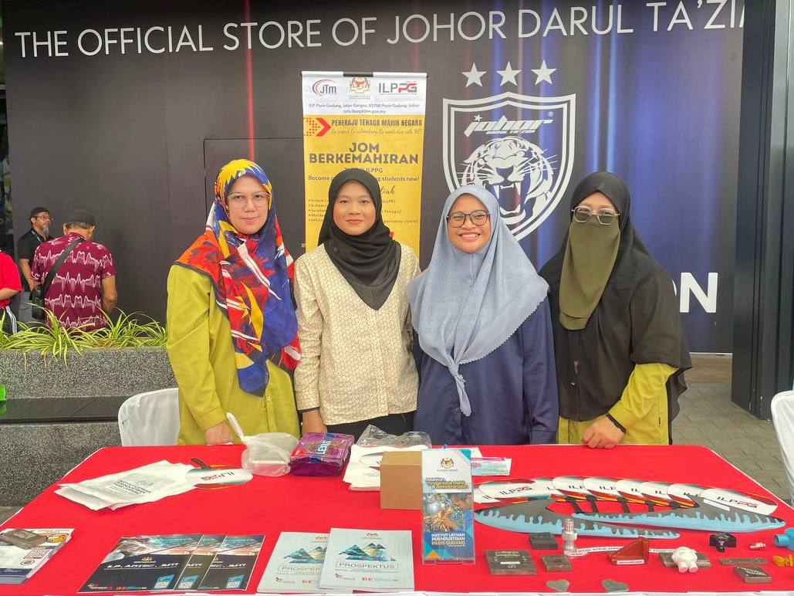
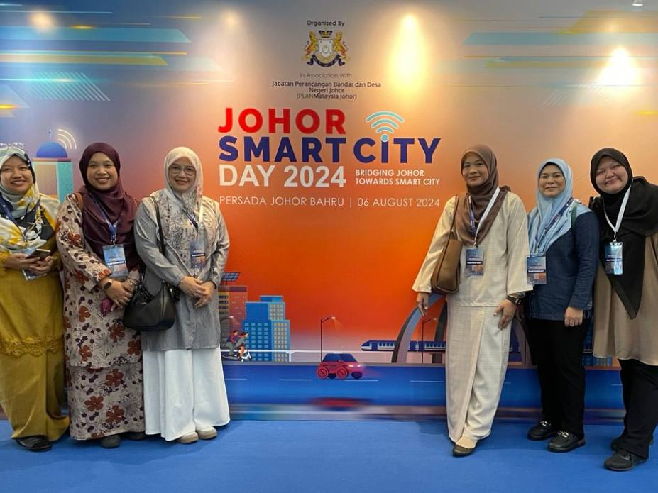

Let's dive deeper to
know more about me✨
My Skills
♡ Teamwork and Leadership ♡
- Collaborating with teams in high-pressure environments
- Leading and organizing tasks for group success
♡ Digital Tools Proficiency ♡
- Proficient in Microsoft Office Suite (Word, Excel, PowerPoint)
- Skilled in Canva for graphic design and layouts
- Basic understanding of social media management
♡ Problem Solving and Adaptability ♡
- Handling unexpected changes
- Creative thinking to overcome logistical challenges
♡ Time Management ♡
- Prioritizing and completing multiple tasks effectively
- Meeting deadlines for events, publications, and advertising campaigns
My Work Experiences
I interned at Institut Latihan Perindustrian Pasir Gudang, where I assisted in organizing events like the Career Fair and Johor Smart City Day 2024. My responsibilities included supporting event logistics and collaborating with staff to ensure smooth operations. This experience helped me improve my skills in event coordination and teamwork.


My Social Media
Stay connected and be part of my exciting journey! Follow me on Instagram for snapshots of my daily adventures and heartfelt moments, and don’t forget to check out my TikTok for fun, creative snippets that’ll brighten your day. Let’s share smiles, stories, and lots of joy together! 🌟✨